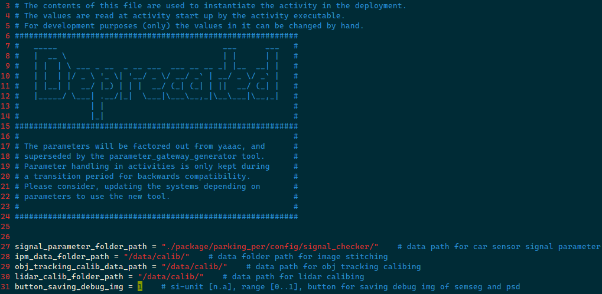

How to debug IPM on sample
Introduction
Write here to debug in the IPM and some basic operations.
1. View whether there are output
The optimal way is to visualize the upper machine to directly see the rastopic output and display of the ramseg or Parking_slot.
If it is not displayed, modify the Param parameter deposit diagram to view, and you can also store test results pictures of psd_xxx.png and semseg_xxx.png under the Output folder of the Sample.
PARKING_PER_VEH_VEH_VEH_PARAMETANCE files under the PARAM file under OUTPUT/YAAAC_PARAMETR_INSTANCES path
Copy this file from SAMPLE to the upper machine. The default is 0 to close the test results diagram.

After copying the corresponding position (output/yaaac_parameter_instances) replacement, the program is restarted, and the test results picture of psd_xxx.png and semseg_xxx.png will be stored under the output/folder. The PSD prefix is shown in the figure below.
If the picture can be stored, it means that the camera pathway is general, and the visual pathway cannot be connected.
If the picture cannot be stored, the camera link is unreasonable, or there is a problem with VIPER itself.
2. View viper question
Modify the Parking startup script, start the script under the Output folder
Copy back to the upper machine to modify the log_level. For the software released by performance, the log is turned off by default. You need to open it manually.
That is, the -A $ Log_level corresponding to viperParking_Activity is directly changed to -a 1.You can hit all logs.
Copy the corresponding position of Sample and restart the software. Sample logging folders (/log/aos/master/) will generate full volume viperparking_activity.log.Send to Per5 colleagues analysis.
If ViperParking has CoreDump, build a ticket together after compressing its ZIP and send it to PER5 colleagues.
3. Parameter control model Runtime
Parking Per has a set of parameters to control the Runtime running output of 5 models.No need to compile software, re -run the program after modifying the Param file.
Param file path at/output/yaaac_parameter_instances/Parking_per_algo_parameter_instance
There are 5 Enable_runtime parameters at the bottom of the file. 0 is forbidden, 1 is activation.If you need to increase the IPM output frame rate (semantic segmentation and parking space detection, etc.), you can only keep the IPM, and the others are set to 0.
The detailed introduction is as follows:
|
param |
model |
tasks |
comments |
|
enable_runtime_ipm |
IPM-MTCNN |
|
Switching bird's eye view reasoning |
|
enable_runtime_nrc_det |
NRC-3D-OBJDET |
|
Fish Eye Single Target Detection |
|
enable_runtime_nrc_pix |
NRC-PIXEL-MTCNN |
|
Fish Eye Single Pixel -level Multi -task |
|
enable_runtime_fv_det |
FV-3D-OBJDET |
|
Before a wide -angle monocular target detection |
|
enable_runtime_fv_pix |
FV-PIXEL-MTCNN |
|
Before a wide -angle monocular pixel -level multi -task |